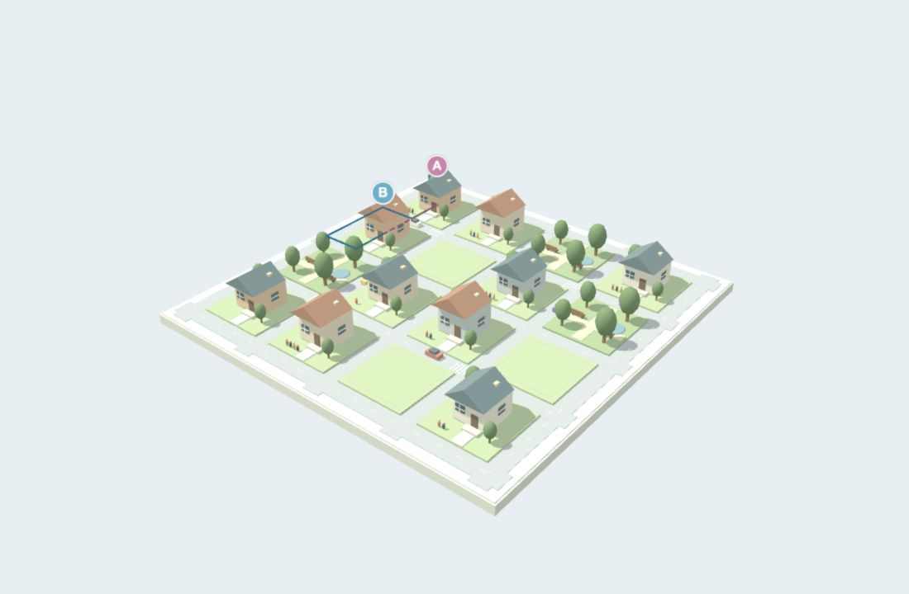
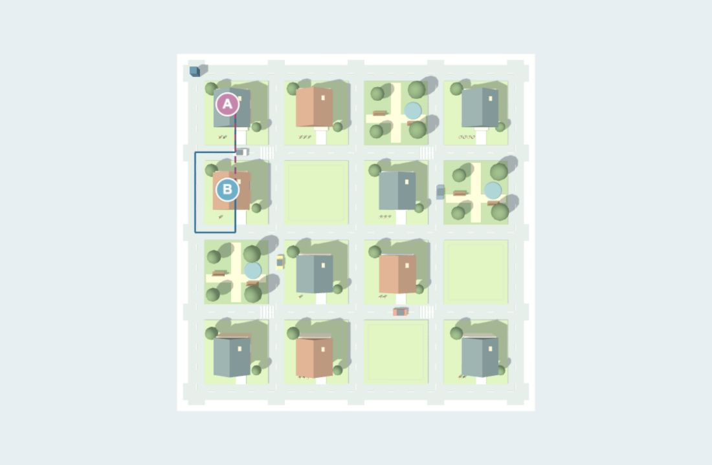
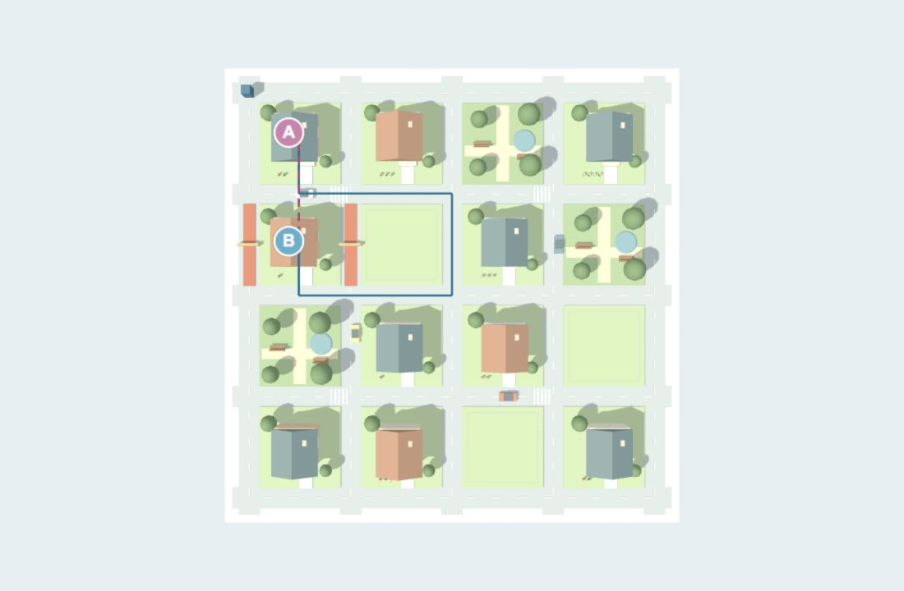

Neighborhood:
distance
How close is a neighbor when the street is closed?
Nicole Lu
Spatial AI · October 2026
An extension of the October 1 Neighborhood simulation.
16 parcels, 40 street links, and residents linked to homes.

Original neighborhood model, extended with location and distance queries.
Two metrics, the same locations
Straight-line distance
Separation between parcel centers in plan, regardless of streets or barriers.
Shortest walking distance
Dijkstra’s algorithm follows open streets and includes the access leg at each end.
Each access leg is 4 model units. Street segments are weighted by geometric length. Units are schematic, not surveyed meters.

A = P1, B = P5. Magenta: straight line. Blue: shortest walking route.
8 units apart, 40 units to walk

The homes stay in place. Two closures add 16 units to the walk, making it 5× the straight-line distance.
Both charts use a 0–40 model-unit scale. Closed links: V:−16:−4 and V:−8:−4. The model computes these routes rather than prescribing them.
Occupants inherit their home locations
A resident’s building identifies their parcel. The simulation therefore compares either two locations or two occupants using the same metrics.
Residents in the same home are co-located in this model. Closing P5’s frontage leaves an 8-unit straight-line separation but removes every walking route to P5.
The animation follows the computed multi-segment route. This extends the comparison beyond a direct line of sight.
Open the interactive simulation
Try “Two occupants,” change a scenario, and play “Animate route.” The model abstracts occupants to home centers and does not simulate travel time.
Live simulation: P1 to P5, 40-unit walk around two closed streets. Drag to orbit.